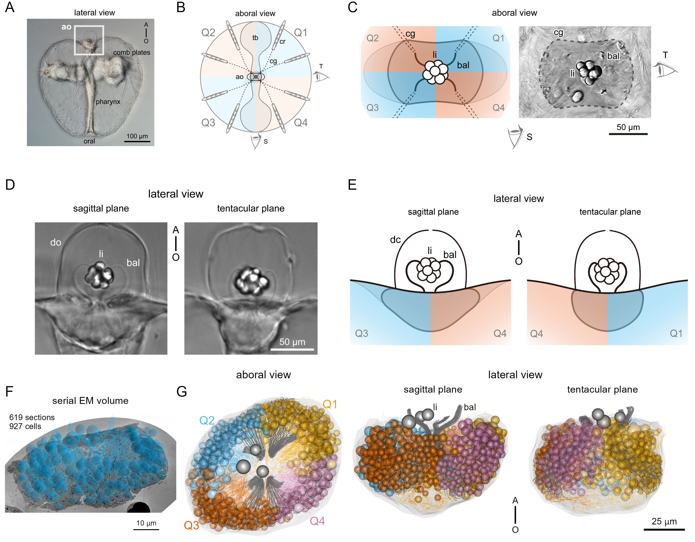

#curl -LH "Accept: application/x-bibtex" https://doi.org/10.7554/eLife.91258.1 >> references.bibCell-type diversity and connectome of the ctenophore apical organ
Kei Jokura1,3,*, Sanja Jasek1,2, Lara Kewalow2, Pawel Burkhardt4, Gáspár Jékely1,2,*
1Living Systems Institute, University of Exeter, Exeter, EX4 4QD, United Kingdom
2Heidelberg University, Centre for Organismal Studies (COS), 69120 Heidelberg, Germany
3National Institute for Basic Biology, Okazaki, …, Japan 4Sars Centre … Berge, Norway *Correspondence: corr_author@email.com
Abstract
text in bold italic underline
Introduction
First descriptions of AO: (Aronova, 1974)
The lobate ctenophore Mnemiopsis
The lithocytes have a large calcium carbonate concretion and… (Tamm, 2014a) Living lithocytes are transported along the balancer cilia to the tip of the statocyst (Noda and Tamm, 2014) The projections of a group of bridge cells located on two sides of the apical organ forms an arch and connects the balancers along the tentacular plane (Tamm and Tamm, 2002).
The easiest way is to use the command line to add new refs to the .bib file:
Results
Volume EM reconstruction of the Mnemiopsis apical organ
- specimen
- volume, resolution, fixation, quality
- number of sections
- skeletonisation in Catmaid
- number of cells
- general anatomy, regions, quadrants

Classification of cell types
- ultrastructural criteria (cilia, vesicles etc)
- number of types, cells per type - table

“the larval bridge has not yet developed forks at its ends, as seen in adult Mnemiopsis bridges”(Tamm and Tamm, 2002)
Figure3 - dome, bicil, monocil, no-cil, plumose, dense vesicle cells (rename), gland? cells, oligo/multiciliated cells
Plumose cells (Hernandez-Nicaise, 1984) may be pressure sensors (Tamm, 2014b)
Figure4 - lamellate body complex, LB, intra-multi-ciliated, relationship to balancer
Figure5 - nerve net, different fragments/cells/syntytia, EM, relation to entire organ
Figure 6 - cilia? renderings of basal bodies, centrioles, length, axoneme structure (table), table about cell types, number of cilia etc.
Synapses
“synaptic regions with the characteristic presynaptic triad mor- phology of ctenophore nerves (i.e., a single layer of vesicles, smooth ER sac, and closely apposed mito- chondria (Hernandez-Nicaise, 1973; Horridge and Mackay, 1964) Hernandez- Nicaise, 1973)”
Figure 7 - synapses, reconstruction, annotation, numbers, distribution of partners, example EM (figure supplement - lots of EM), mitochondria (Fig suppl - mitochondrion stats - Sanja)
Gap juntions? Innexins are expressed in the apical organ in specific patches of cells in each quadrant (Ortiz et al., 2023)
Ctenophore synapses (Hernandez-Nicaise, 1973)
We found no synapses between bridge and balancer, in agreement with Tamm (Tamm and Tamm, 2002).
Figure 8 - connectome cell-type based, quadrant based, nerve net syntycia, bridge, quadrants (Fig suppl - cell-based network)
Tamm&Tamm observed synapses from neurites to bridge cells (2002). and in Mnemiopsis larvae observed synapses from bridge cells onto other cells
Inserting Figures
You can add your figures into the rendered document. We saved the figures into /manuscript/figures or /manuscript/figure_supplements and can insert them from there. We use knitr::include_graphics for this. The title and legend can also be edited, as will as the width of the output figure.
Equations
Equations can also be inserted, Insert -> Display Math:
\[ \bar{X} = \frac{\sum_{i=1}^{n} x_{i}}{n} \]
Sourcing code and working with variable
The ‘analysis/scripts/statistics_for_paper.R’ script is sourced and it runs but the output is not included in the knitted output. But we can access the variables defined in the sourced script simply by adding ` r var_name ` between ` backticks, in this case max_PRC value is (now this number comes from our sourced script).
If we update the data, the script can recalculate the variable we want to refer to in the text and update the number.
Materials and Methods
Acknowledgements
We would like to thank the Jekely lab for the R project template (https://github.com/JekelyLab/new_paper_template) we used to write this paper. This work was funded by … JSPS… ERC.. Others …
References
References
Aronova M. 1974. Electron microscopic observation of the aboral organ of ctenophora. I. The gravity receptor. Zeitschrift fur mikroskopisch-anatomische Forschung 88:401–412.
Hernandez-Nicaise M-L. 1984. CtenophoraBiology of the Integument. Springer Berlin Heidelberg. pp. 96–111. doi:10.1007/978-3-642-51593-4_9
Hernandez-Nicaise M-L. 1973. The nervous system of ctenophores III. Ultrastructure of synapses. Journal of Neurocytology 2:249–263. doi:10.1007/bf01104029
Horridge GA, Mackay B. 1964. Neurociliary synapses in pleurobrachia (ctenophora). Journal of Cell Science S3-105:163–174. doi:10.1242/jcs.s3-105.70.163
Noda N, Tamm SL. 2014. Lithocytes are transported along the ciliary surface to build the statolith of ctenophores. Current Biology 24:R951–R952. doi:10.1016/j.cub.2014.08.045
Ortiz J, Bobkov YV, DeBiasse MB, Mitchell DG, Edgar A, Martindale MQ, Moss AG, Babonis LS, Ryan JF. 2023. Independent innexin radiation shaped signaling in ctenophores. Molecular Biology and Evolution 40. doi:10.1093/molbev/msad025
Tamm SL. 2014a. Formation of the statolith in the ctenophore mnemiopsis leidyi. The Biological Bulletin 227:7–18. doi:10.1086/bblv227n1p7
Tamm SL. 2014b. Cilia and the life of ctenophores. Invertebrate Biology 133:1–46. doi:10.1111/ivb.12042
Tamm SL, Tamm S. 2002. Novel bridge of axon‐like processes of epithelial cells in the aboral sense organ of ctenophores. Journal of Morphology 254:99–120. doi:10.1002/jmor.10019